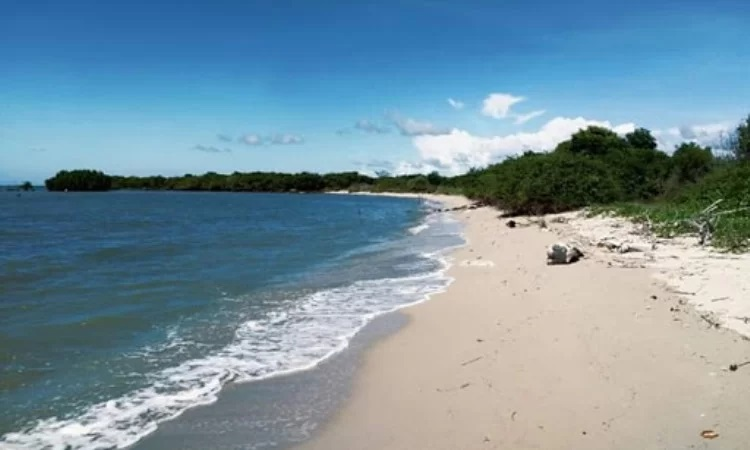

Asal Usul Nama Lamongan Mengutip dari laman resminya, nama Lamongan berasal dari nama seorang tokoh pada masa silam. Dahulu ada seorang pemuda bernama Hadi yang mendapatkan pangkat Rangga menjadi Ranggahadi.
Namun beberapa waktu kemudian, namanya berubah menjadi Mbah Lamong, yakni sebutan yang diberikan oleh rakyatnya kala itu. Hal itu diberikan karena beliau pandai ngemong rakyatnya, pandai membina daerahnya, dan mahir dalam menyebarkan agama Islam.
Dari kata Mbah Lamong inilah yang kemudian masyarakat menyebut wilayah yang berada di Jawa Timur ini menjadi Lamongan. Adapun yang menobatkan Tumenggung Surajaya menjadi Adipati pertamanya adalah Kanjeng Sunan Giri IV yang bergelar Sunan Prapen.
Geografis

Secara geografis Kabupaten Lamongan terletak pada 651'54" - 723'06" Lintang Selatan dan 11233'45" - 11233'45" Bujur Timur. Kabupaten Lamongan memiliki luas wilayah kurang lebih 1.812,8 km2 atau +3.78% dari luas wilayah Propinsi Jawa Timur. Dengan panjang garis pantai sepanjang 47 km, maka wilayah perairan laut Kabupaten Lamongan adalah seluas 902,4 km2, apabila dihitung 12 mil dari permukaan laut.
Daratan Kabupaten Lamongan dibelah oleh Sungai Bengawan Solo, dan secara garis besar daratannya dibedakan menjadi 3 karakteristik yaitu:
1. Bagian Tengah Selatan merupakan daratan rendah yang relatif agak subur yang membentang dari Kecamatan Kedungpring, Babat, Sukodadi, Pucuk, Lamongan, Deket, Tikung, Sugio, Maduran, Sarirejo dan Kembangbahu.
2. Bagian Selatan dan Utara merupakan pegunungan kapur berbatu-batu dengankesuburan sedang. Kawasan ini terdiri dari Kecamatan Mantup, Sambeng,Ngimbang, Bluluk, Sukorame, Modo, Brondong, Paciran, dan Solokuro.
3.Bagian Tengah Utara merupakan daerah Bonorowo yang merupakan daerah rawan banjir.Kawasan ini meliputi kecamatan Sekaran, Laren, Karanggeneng, Kalitengah, Turi, Karangbinagun, Glagah.
Selain sebagai gerbang kertasusila, Kota Lamongan Jawa Timur, meraih piala Adipura Kencana. Prestasi tersebut diperoleh setelah enam kali berturut-turut mendapat piala Adipura. Selain itu, Kota Lamongan merupakan satu-satunya kota kecil yang mendapatkan Adipura Kencana, dan sejajar dengan tujuh kota besar di Indonesia. selain itu, sebagai gerbang kertasusila, kota Lamongan memeiliki segudang wisata yang dapat dikunjungi olwh wisatawan.
Makam Sunan Drajat
Salah satu objek wisata di Lamongan yang bisa Anda kunjungi adalah Makam Sunan Drajat. Merupakan salah satu tokoh yagn menyebarkan Agama Islam terutama pada Pulau Jawa. Menjadikan beliau salah satu tokoh yang sangat di hormati bahkan hingga beberapa ratus tahun setelah beliau wafat.
Wisata Pohon Trinil
Berkunjung ke Lamongan terasa belum lengkap jika belum mendatangi destinasi Wisata Pohon Trinil. Sedikit berbeda dengan tempat wisata alam lainnya, disini pengunjung bisa menyaksikan sebuah pohon berukuran besar dengan bentuk yang unik dibandingkan dengan jenis pohon pada umumnya. Anda akan dibuat kagum sejak pertama kali melihatnya secara langsung. Pertama kali ditemukan warga ada tahun 2017 lalu, sejak saat itu pula kawasan tersebut berubah menjadi destinasi wisata populer di Lamongan. Selain memuji ciptaan Tuhan, pengunjung juga diperbolehkan mengambil gambar hingga puas asalkan tidak merusak tanaman tersebut. Bahkan Anda tidak akan dikenakan biaya sedikitpun ketika tertarik melihatnya.